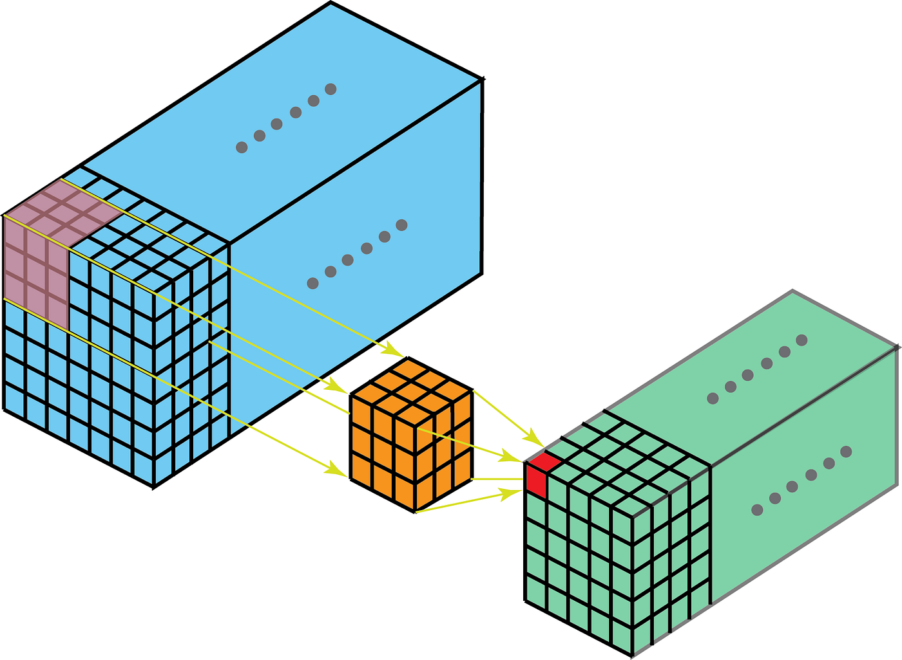
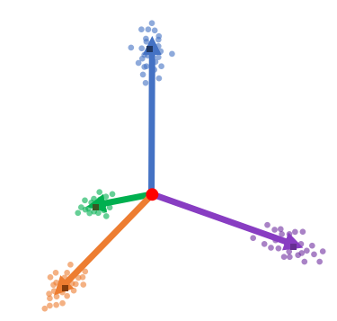
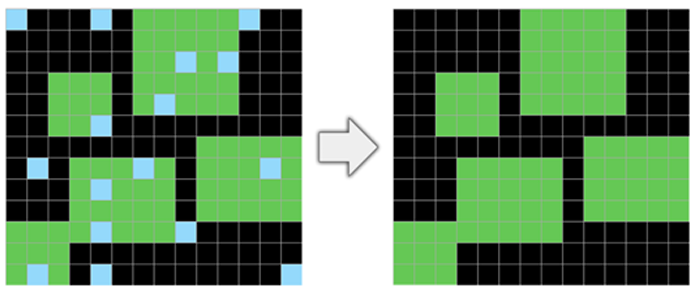

|
Hello! I am a Student Research Scientist at IBM Research. I received my M.Sc. in Computer Science from Tel Aviv University, where I worked with Professor Lior Wolf. I am interested in questions such as:
Interested in collaborations? Please reach out 😁 Email | GitHub | LinkedIn | Google Scholar |
|
|
|  |
Tomer Galanti, Mengjia Xu, Liane Galanti, Tomaso Poggio NeurIPS (2023). paper / code Derived relatively tight generalization bounds for sparse neural networks (e.g., convolutional networks) — shedding light on the pivotal influence of the network’s sparsity on its ability to generalize. We empirically showed that our bound is significantly tighter than alternative generalization bounds for convolutional network from the literature. |
|  |
Tomer Galanti, Liane Galanti, Ido Ben-Shaul TMLR (2023). paper / code Observed that neural networks trained for classification exhibit a property in which Neural Collapse propagates backward from the penultimate layer to several preceding layers. We introduced the notion of “effective depth,” which captures the number of bottom layers in a network that do not experience neural collapse. We empirically demonstrated that a model’s effective depth is independent of its actual depth and adapts to the complexity of the data. |
|  |
Liane Galanti, Ethan Baron Preprint (2024). paper This study underscores the real-world challenges of LLMs in complex reasoning tasks. We tested a wide range of LLMs on the ARC benchmark, employing diverse prompting techniques, demonstrating the limitations of LLMs in abstract reasoning within non-linguistic domains. |
|
Segev Shlomov, Ben wiesel, Aviad Sela, Ido Levy, Liane Galanti, Roy Abitbol Preprint (2024). paper We explored whether action planning or element grounding capabilities are more crucial for executing action-based tasks from natural language queries (e.g., booking a flight, searching for content on Google). Using the Mind2Web benchmark, we tested various agents, isolating and assessing the contributions of planning and grounding capabilities to performance. |